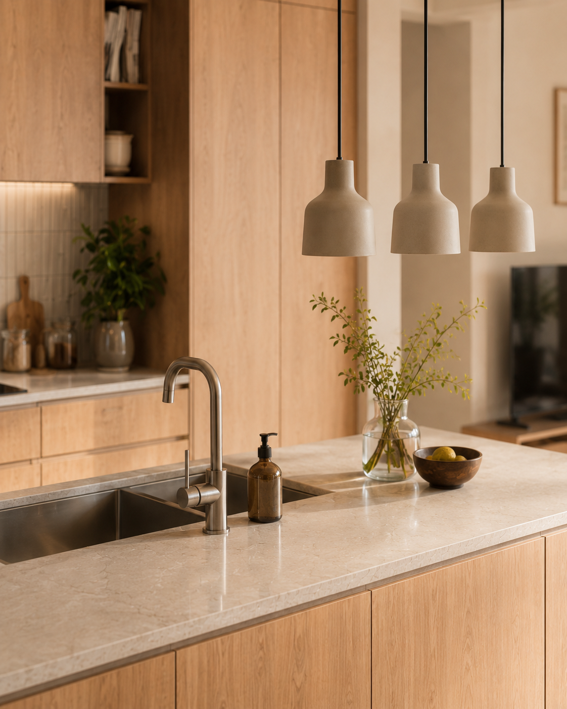

水回り・内装
家族で過ごしやすい明るいLDKへ
キッチンまわりの動線や収納を見直し、家族が集まりやすい空間に整える事例です。

RENOVATE YOUR LIFE
費用・修理の判断・補助金・業者選びまで。リフォーム前に知っておきたい情報を、やさしく整理する住宅リフォーム情報サイトです。
気になる場所や設備から、費用・交換時期・注意点を確認できます。
リフォーム前の不安を、費用・判断・制度・業者選びに分けて整理します。
完成後の写真を見ることで、費用だけでは分かりにくい暮らしの変化や工事範囲を想像しやすくします。
キッチンまわりの動線や収納を見直し、家族が集まりやすい空間に整える事例です。

古くなった浴室を交換し、断熱性や日々の使いやすさを整える事例です。

色選びや劣化症状を確認しながら、塗装や補修を検討する事例です。

費用や工事内容を知っておくと、見積もり前の不安を落ち着いて整理できます。
水回り、外壁・屋根、住宅設備など、気になるテーマごとに施工事例をまとめて確認できます。
最初に読んでおくと、家族との相談や見積もり前の準備がしやすくなる記事です。
部位ごとの費用感と、費用が変わる主な理由を整理します。
相談前に確認したい業者選びの基準を整理します。
対象になりやすい工事や、確認するときの注意点を整理します。
見積書を見るときに確認したい項目や比較の考え方を整理します。
公開日・更新日を確認しながら、最新の判断材料を探せます。

費用の幅と、見積もり前に確認したい項目を整理します。

工事範囲による費用差と、使いやすさを考えるポイントを紹介します。

交換時期の目安と、見積もり前に知っておきたい流れを整理します。

断熱リフォームで確認したい費用と制度の見方をまとめます。

対象になりやすい工事と、申請前に確認したい注意点を紹介します。

相見積もりや契約前に確認したい基準を分かりやすく整理します。
費用や修理の必要性、補助金、業者選びは、住まいの状態によって判断が変わります。まずは情報を整理し、必要に応じて相談先を検討しましょう。